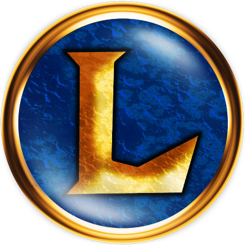
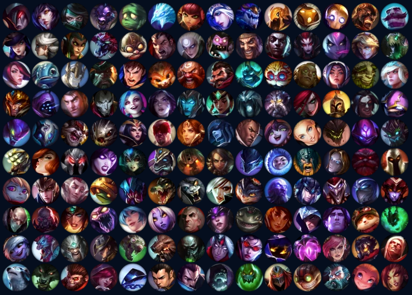
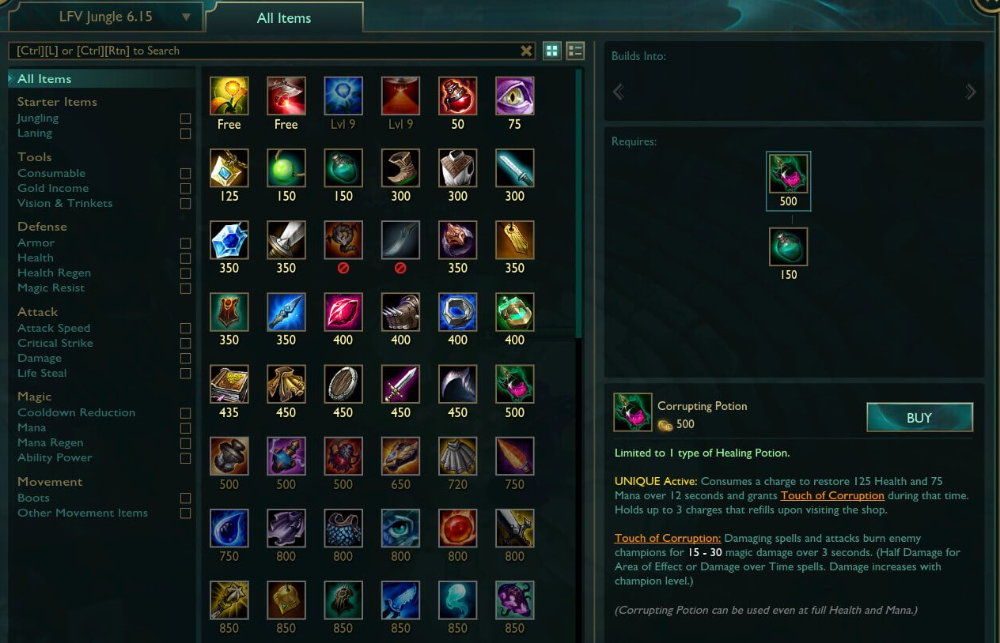
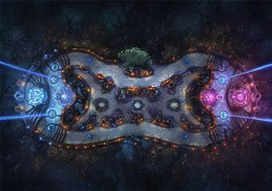
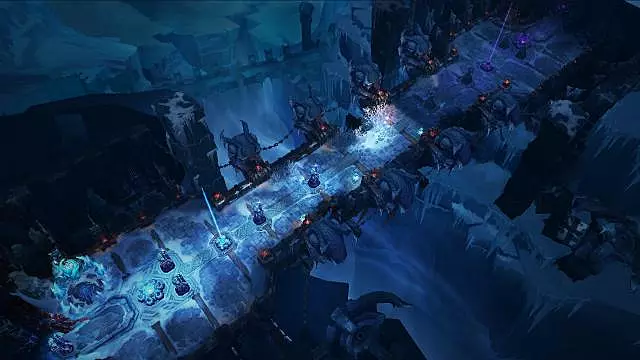
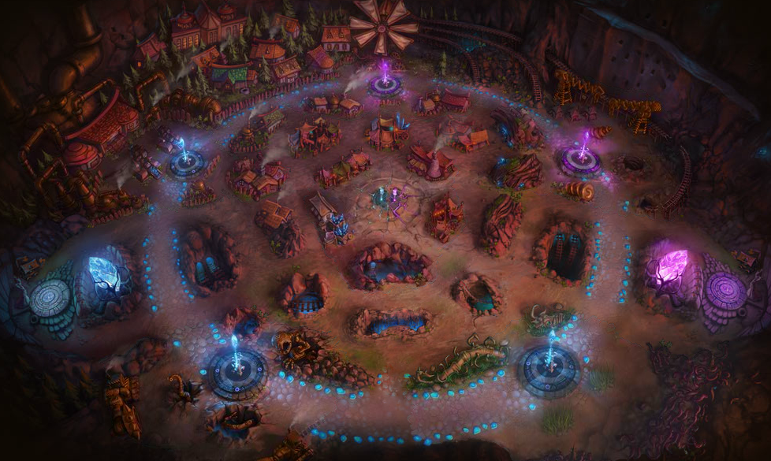

Sadržaj igre
LoL je trodimenzionalna, Višekorisnička onlajn borbena arena u trećem licu (MOBA). Igra se sadrži od 3 trenutna moda igranja: Samoners Riftu (eng. Summoner's Rift), Twisted Treeline, i Howling Abyss. Još jedan mod igre, Crystal Scar, je uklonjen. Igrači se takmiče u mečevima, koji traju bilo gde od 20 do 60 minuta. U svakom modu timovi igraju zajedno da postignu pobednički uslov, tipično uništavajući glavnu zgradu (koja se zove Nexus) u neprijateljskoj bazi nakon zaobilženja linije odbrane defanzivnih struktura zvanih tvrđavama ili kulama.
U svakom modu, igrači kontrolišu likove koji se zovu heroji, izabrani i zaduženi svaki meč, od kojih svaki ima set jedinstvenih sposobnosti koji odlučuju njihov stil igre - jedan pasivan, ili urodjen, sposobnost koja ne može aktivirati i samim tim daje perpetualni bonus ili efekat, tri normalne, ili 'bazične', sposobnosti, i moćan 'ultimejt' koji može biti otključan nakon što lik dobije šesti nivo.
Ultimejt sposobnosti su mnogo snažnije od običnih i zato imaju mnogo duže vreme, pre nego što mogu ponovo taj ultimejt da upotrebe
Herojev pun set sposobnosti se naziva njegovom 'opremom'.
Korišćenje sposobnosti heroja je ograničeno kuldaunom i resursima (uobičajno neka forma mane ili energije). Ako heroju ponestane resursa, ne može bacati te sposobnosti, čak iako nisu na kuldaunu, i moraju čekati da se regenerišu. Neki heroji nemaju resurse, koji su ograničeni samo kuldaunom , dok drugi imaju druge načine da vraćaju svoje resurse. Svaki heroj takođe ima 'auto' ili 'bazični napad' u kom nanose štetu meti u razdaljini jednostavnim desnim klikom, bez ikakve cene - neki heroji se bore prsa u prsa i moraju biti bliže da bi koristili bazični napad, dok su drugi dalekometni, zbog cega su prvi navedeni izdržljiviji.
Stopa kojom heroj moze da pravi bazične udare je određena njegovom brzinom napada, osobinom koja može da se popravi kroz oružja. Neki heroji takođe koriste municiju i moraju da je napune nakon što izbace par bazičnih napada. Heroji počinju svaki meč prvim nivoom, nivoom i onda dobijaju iskustva kroz tok meča da dostignu maksimalni nivo 18.
Dobijajući nivoe u mečevima dozvoljava herojima da otključaju njihove sposobnosti i da ih pospeše na brojne načine svojstveno sposobnostima svakog heroja. Ako heroj izgubi sve svoje helte, onda su poraženi, i automatski će se ponovo 'roditi' u njihovoj bazi nakon što se tajmer za ponovno oživljavanje završi - tajmer se povećava kroz tok igre.
Igrači takođe počiju meč sa malom količinom zlata, i mogu da zarade dodatno zlato na razne načine: ubijajući stvorenja, ubijajući ili pomoći da se ubije neprijateljski heroji, uništavanjem neprijateljskih struktura, pasivno kroz vreme, i kroz jedinstvene interakcije sa oružjem ili sposobnošću heroja. Ovo zlato se može trošiti kroz meč da se kupe oružja koja će da ojačaju sposobnosti heroja i razvitak igre na razne načine. Herojevo iskustvo, stečeno zlato, i kupljena oružja su specifična za svaki meč i ne prenose se na nadstojeće mečeve. Tako da, svi igrači počinju svaki meč na manje ili vise jednakom terenu ko i njihov protivnički tim.
Preko mečeva, heroji stiču nagrade koje se apliciraju na njihov nalog. Igračev nalog počinje sa prvim nivoom i napreduje kroz maksimum 30og nivoa sa iskustvenim poenima koje stiču nakon svakog meča. Kako igrač napreduje on otključava sadržaj koji je inače uskraćen početnicima. To uključuje 'prizivačke čini' - visokog udela, visokog kuldauna (eng. Cooldown) sa specificnom upotrebom. Svaki heroj može da izabere da se opremi sa 2 do 11 prizivačkih čini pre igre - neke prizavčke čini su zasebne određenim modovima igre, a neki su uklonjeni kroz istoriju igre. Igrači mogu da odrade stranice runa. Rune daju herojima male trajne bonuse i mogu da se steknu kroz trošenje Poenima udela tj. IP poenima
Mape Igre
LoL se sastoji od tri glavne mape, ili "Polja Pravde". Svaki ima drugačiji teren, objektive i uslove pobede, kao i drugačije prizivačke moći/čini i oružja. Kao četvrta mapa, Crystal Scar je otkazana.
Summoners Rift:

Samoner Rift je najpopularnija mapa u LoLu. Na ovom tipu mape, dva tima od pet igrača uništavaju protivničku zgradu zvanu Nexus koju štiti protivnički tim i defanzivne strukture. Jedan nexus je smešten u svakoj protivničkoj bazi na suprotnim stranama mape, u donjem levom ćošku I gornjem desnom ćošku. Ove strukture stalno prave slabe likove koje ne kontrolišu igrači koji se zovu podanici, koji idu unapred do neprijateljske baze kroz tri puta: gornji (top), srednji (mid), i donji (bot) put. Igrači se takmiče da guraju ove podanika u neprijateljsku bazu, sto im dozvoljava da unište protivničke strukture i da na kraju dobiju partiju. Između tih puteva su neutralna područja mape koja se zove 'Šuma' (eng. Jungle), postavljena u četiri kvadranta. Posebno opasna čudovišta naseljavaju šumu i daju bonuse onima ko ih ubije.
Twisted Treeline:

U Twisted Treeline, dva tima igrača se takmiče da unište protivnički Nexus zaštićen protivničkim kulama. Konceptualno je slično Samoner Riftu, ali manji da bi bio shodan 3v3 mapi umesto 5v5. Umesto tri putanje i tri inhibitora ima 2 putanje i 2 inhibitora, sa šumom izmedju. Ostale razlike su to što imaju dva "Altars", kontrola ovih "Altara" daje okupacionom timu različite bonuse i menjanjem Barona sa Vilamaw-om, ogromnim arahnoidnim božanstvom. Živi igrači tima koji ubiju Vilemaw-a dobijaju privremeni bonus, slično ubijanju Nashor-a.
Howling Abyss:

Howling Abyss se koristi za "ARAM" (All Random All Mid) mečeve, i 5v5 tipa je. Razlika izmedju Abyss-a i drugih mapa je što postoji samo jedan uzak put sa kulama i inhibitorom i nema neutralne šume. Tako da umesto brzih borbi i skrivenih pokreta, Abyss se fokusira ekskluzivno na velike timske bitke u jednom jedinom srednjem putu. Igrači ne mogu da se vrate u njihove baze da povrate živote ili manu ili kupuju stvari dok nisu ubijeni. Aram je pokrenut kao zvanični mod u Septembru 2013.
Crystal Scar:

Crystal scar je korišćen za Dominion mod, prekinut format igre gde se timovi od pet igrača takmiče da uhvate kontrolne poene i da drže te poene na što duži mogući period. Mapa se sadrži od kruga sa 5 kontrolnih poena. Svaki tim kontroliše bazu koja se zove fontana, locirana na donjem levom i gornjem desnom uglu mape. Svaki tim dobija poene hvatajući i držeći više objektiva od protivničkog tima kroz vreme, sto je dalje smanjeno od protivničkog života tima ukupno. Ovi poeni imaju otkucaj od inicijalnog skora od 200. Prvi tim koji smanje skor do 0 poena dobiju pobedu. Dominion je lansiran Septembra 26, 2011 i penzionisan je February 22, 2016, iako je Crystal Scar korišćen za druge rotirajući formate poput Ascensiona-a.
Iako se ova mapa u poslednje vreme slabo igrala, igrači su pronašli jedan jako interesantan način kako da se zabave na ovoj mapi. Skupili bi ekipu od po nekoliko igrača i igrali žmurke na ovoj mapi gde bi se svaki put rotirali u određenim rundama. Osoba koja traži bi uzela nekog običnog heroja koji recimo nema sposobnosti poput nevidljivosti, brzog kretanja ili teleportacije, a igrači koji se sakrivaju bi uzeli baš heroje koji imaju navedene sposobnosti što bi igru učinilo još interesantnijom.